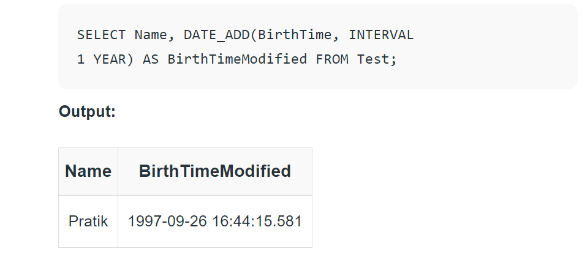

Date Functions
In SQL, dates are complicated for newbies, since while working with a database, the format of the data in the table must be matched with the input data to insert. In various scenarios instead of date, datetime (time is also involved with date) is used.For storing a date or a date and time value in a database,MySQL offers the following data types:
DATE format YYYY-MM-DD
DATETIME format: YYYY-MM-DD HH:MI: SS
TIMESTAMP format: YYYY-MM-DD HH:MI: SS
YEAR format YYYY or YY
Now, come to some popular functions in SQL date functions.
1.NOW()
Returns the current date and time.
Query:
SELECT NOW();
2.CURDATE()
Returns the current date.
Query:
SELECT CURDATE();
3.CURTIME()
Returns the current time.
Query:
SELECT CURTIME();
4.DATE()
Extracts the date part of a date or date/time expression.
5.DATE_ADD()
Adds a specified time interval to a date.
Syntax:
DATE_ADD(date, INTERVAL expr type);
Where, date - valid date expression, and expr is the number of intervals we want to add. and type can be one of the following: MICROSECOND, SECOND, MINUTE, HOUR, DAY, WEEK, MONTH, QUARTER, YEAR, etc.
6.DATE_SUB()
Subtracts a specified time interval from a date. The syntax for DATE_SUB is the same as DATE_ADD just the difference is that DATE_SUB is used to subtract a given interval of date.
7.DATEDIFF()
Returns the number of days between two dates.
Syntax:
8.DATEDIFF(date1, date2);
date1 & date2- date/time expression


